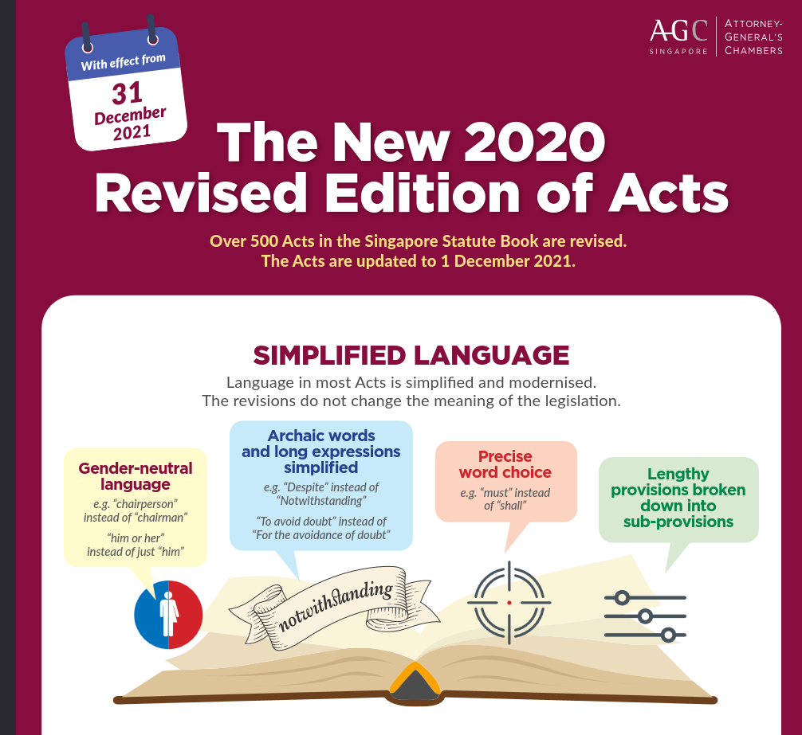
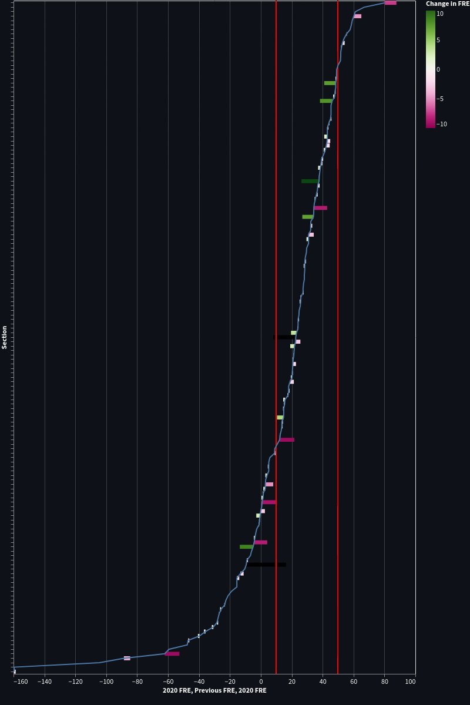
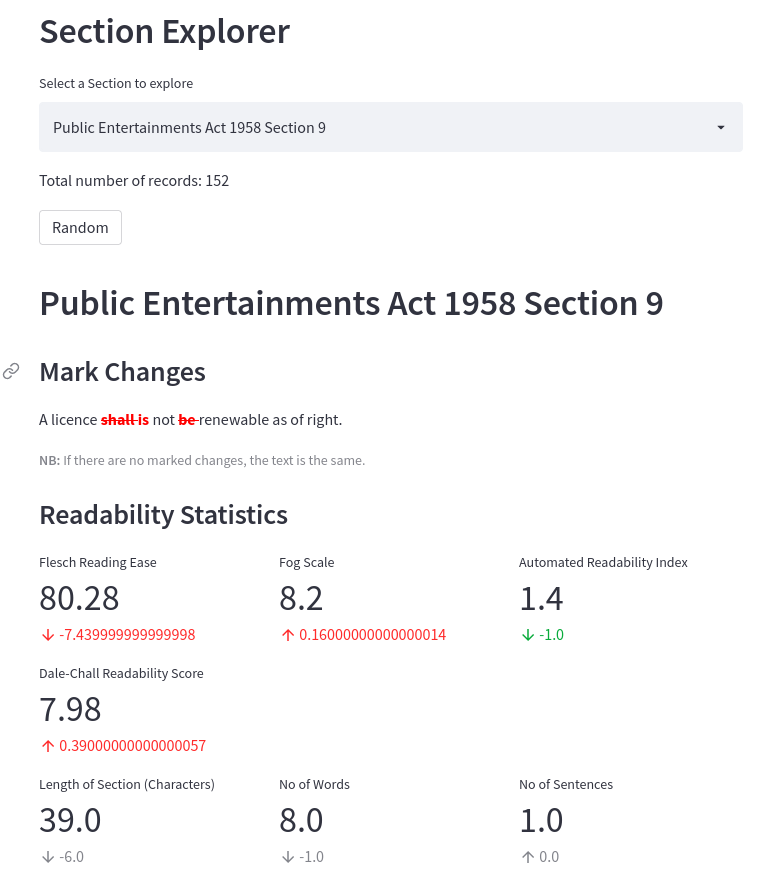
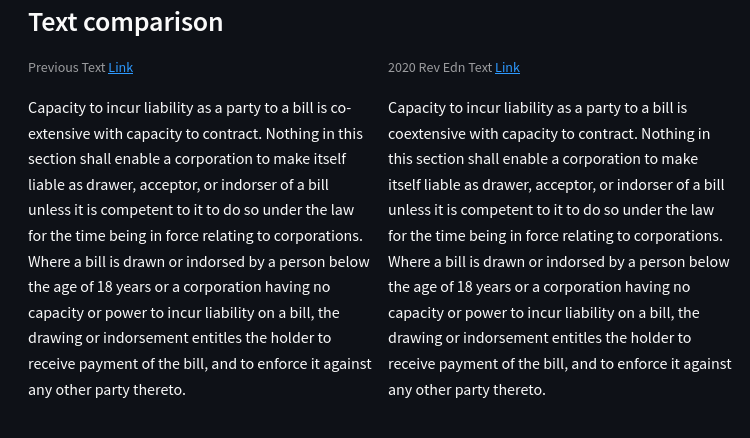
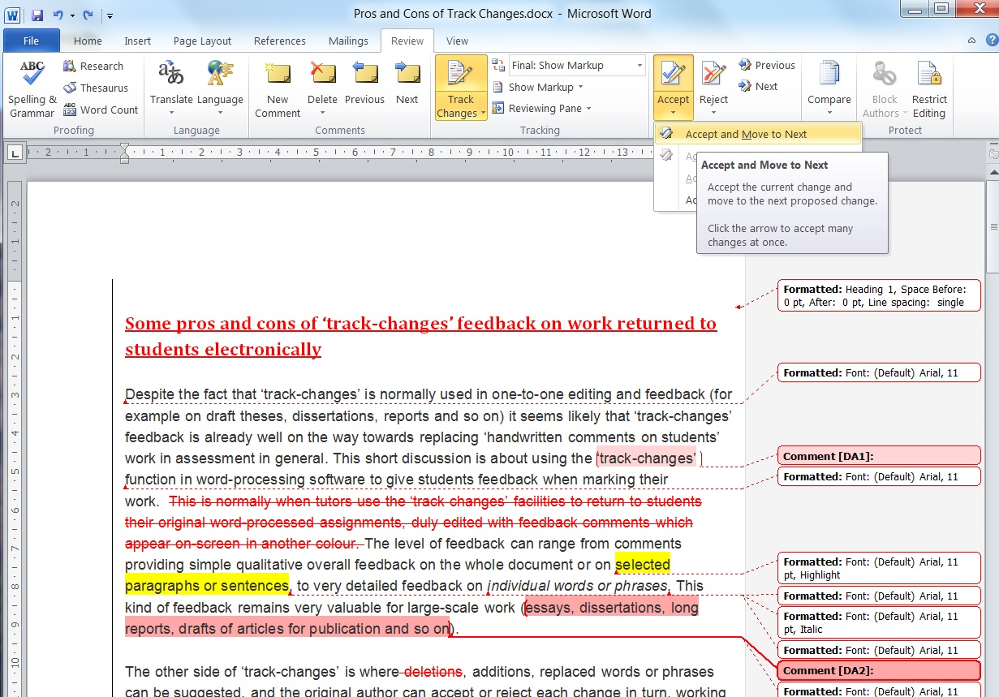
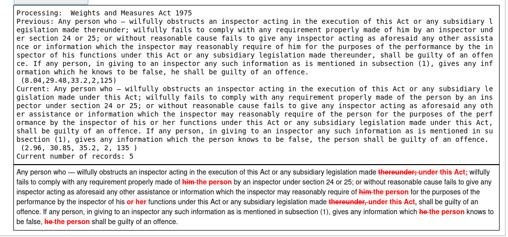
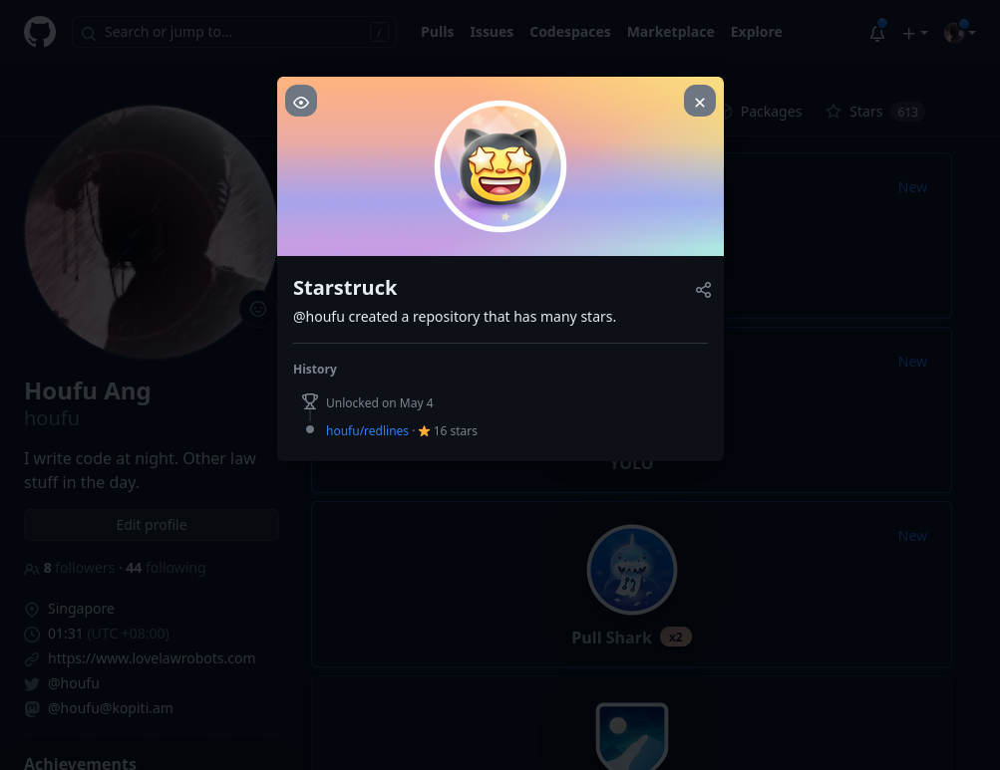
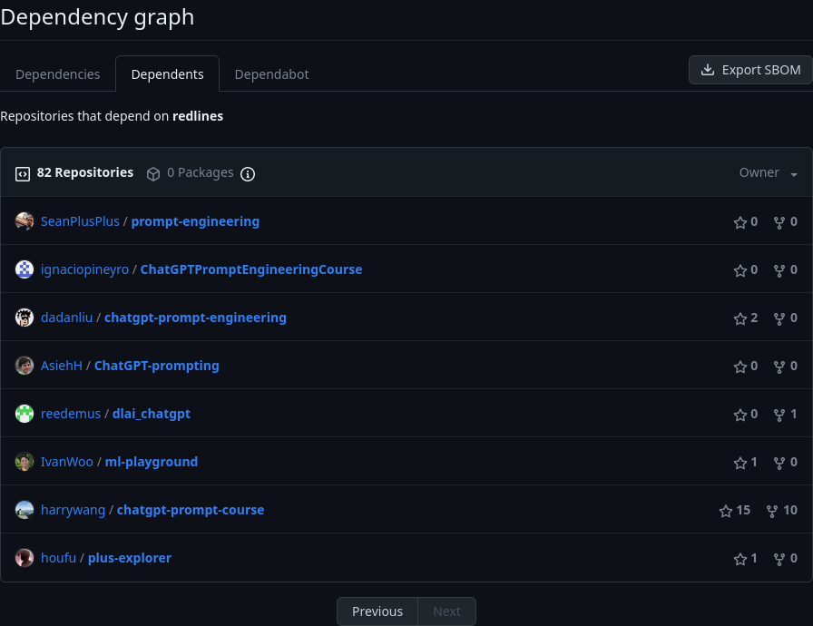
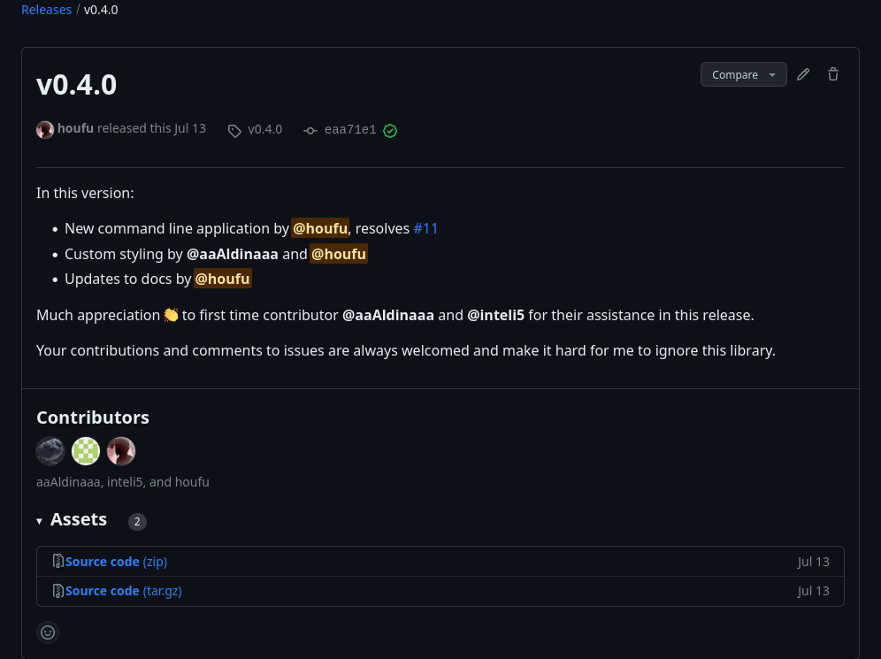

From Law to Code
My Unexpected Journey into Open Source
geekcamp.sg, 14 October 2023
Disclaimer
- Views are strictly mine and I don't represent anyone else
- No legal advice blah blah blah
- I assume no liability whatsoever for any errors or omissions in this presentation.
- I assume no liability whatsoever for your use of this presentation (including its contents).
This work is licensed under CC BY-ND 4.0
Outline
- Who am I
- Origins of the redlines library
- A brief, sparkling moment of virality
- How I "open source"
- Why you should do it too
Who am I
Corporate Counsel by day
- PQE: 10+
- Previous life: all sorts of litigation
- Now: In house counsel

Coder by night

What are lawyers like?
Lawyers are perfectionists
to a fault...
Lawyers are very conscious of risks
Sales: Legal is always worried about shit that never happens bro
— Alex Su (@heyitsalexsu) August 22, 2023
Also sales: pic.twitter.com/xkvmJMtd4l
Lawyers are doing fine
So... how did
redlines
start?
It begins with a plan to do "data science"
Big changes to the laws in Singapore at the end of 2021
Simplified language
Language in most Acts is simplified and modernised.
e.g. "Despite" instead of "Notwithstanding"
"To avoid doubt" instead of "For the avoidance of doubt"
e.g. "chairperson" instead of "chairman"
"him or her" instead of just "him"
How would we evaluate the readability of legislation?
It looks like this...
You can read more about my conclusions in this project on my blog.
I wanted a way to explore changes in detail (by section) too
To see the finished app you can visit it here: https://share.streamlit.io/houfu/plus-explorer/main/explorer.py
So I needed a way to visualise changes in text.
The "python" way was not appealing to me.
from pprint import pprint
pprint(result)
[' 1. Beautiful is better than ugly.\n',
'- 2. Explicit is better than implicit.\n',
'- 3. Simple is better than complex.\n',
'+ 3. Simple is better than complex.\n',
'? ++\n',
'- 4. Complex is better than complicated.\n',
'? ^ ---- ^\n',
'+ 4. Complicated is better than complex.\n',
'? ++++ ^ ^\n',
'+ 5. Flat is better than nested.\n']
I wanted Microsoft Word... in Markdown!
I looked all over the web for something that could do this, but I couldn't find any
I had to make my own.
How does redlines work?
A brief introduction
What's the easiest and fastest way to get my red lines?
I used the SequenceMatcher helper in the standard python library.
How to get a redline
The quick brown fox jumps over the lazy dog.
VS
The quick brown fox walks past the lazy dog.
Step 1: Tokenize text into a list of words
["The" "quick" "brown" "fox" "jumps" "over" "the" "lazy" "dog."]
VS
["The" "quick" "brown" "fox" "walks" "past" "the" "lazy" "dog."]
Step 2: Compare the list of words using SequenceMatcher
["The" "quick" "brown" "fox" "jumps" "over" "the"
"lazy" "dog."]
VS
["The" "quick" "brown" "fox" "walks" "past" "the"
"lazy" "dog."]
Step 3: Get the opcodes
('equal', 0, 4, 0, 4)('replace', 4, 6, 4, 6)('equal', 6, 9, 6, 9)
You can read more about SequenceMatcher in the official docs: https://docs.python.org/3/library/difflib.html#difflib.SequenceMatcher
Step 4: Create the redlines from the opcodes
('equal', 0, 4, 0, 4)-> "The quick brown fox"('replace', 4, 6, 4, 6)-> "jumps over walks past "('equal', 6, 9, 6, 9)-> "the lazy dog."
Step 5: Finish by forming the output
"The quick brown fox jumps over walks past the lazy dog."
It works for my App!
My work is done, so I decided to open source it anyway with no expectations.
March 2022
Having completed my side project, I moved on.
November 2022
Public release of ChatGPT
An interface for a legal chatbot
"Retrieval Augmented Generation" using legal sources
"Summarising legal news and generating a newsletter
A courtroom simulator
I had completely forgotten about redlines.
Until one morning, I woke up starry eyed.
It seems that a popular prompt engineering course was using my library briefly
Other than stars, I found others volunteering pull requests and asking questions about the library.
Overnight, I have become an open source maintainer...
With this encouragement, I was able to try many things that I wouldn't do as a user
Reviewing code contributions and merging them in my project
Opening up a Matrix channel to receive questions and discuss

Participation from others also helps me work harder on redlines
- CLI and Web application
- More input and output document formats
- Considering Long documents
- More stylings
Hopefully, the library gets to where I envisioned it'd go: redlines everywhere for anyone
What have I learnt from my short time as a maintainer?
New contributions are not so straightforward
If the pull request is too awesome...
I worry that I am not good enough to evaluate it. 😭
On the other hand...
If the pull request is terrible...
I get upset when it breaks the code or wastes my time. 😠
Just take it easy, bro 😎
- Rely on (automated) unit tests to explain code and features
- Comment, ask questions and take your time
- Merge first, fix later
- Have more empathy for your contributors and users
I've always wondered -- who's going to contribute to your project for free?
You never know until you ask! 🕵🏼♂️
Encouraging contributions
- Attract users: Write enough documentation
- Work in the open: Document your thoughts on an issue tracker and label them
- Look alive
Don't forget, you're still the Chief Cat Herder.
The stars are nice, but what if I want to do other things with my life?
There's always a conflict between the 🔥 in my 💙 and the 🔥 in my 🧠.
Avoiding burnout
- Just take it easy, bro 😎
- Share the burden early
- Get the bigger picture and check in regularly
Should I get involved in open source?
Yes, obviously...
Benefit 1: A great way to learn how to code and how software is made
A safe way to get "Real world" experience
Benefit 2: Master a different way to work
You're working from home all the time
Benefit 3: Meet IRL people who are interested in the same things as you
If you only spend time with lawyers, you will only ever get to meet lawyers.
Benefit 4: Create a something that lots of people can enjoy
Free and Open source is as A2J as you can get.
Thanks for listening!
By Ang Hou Fu